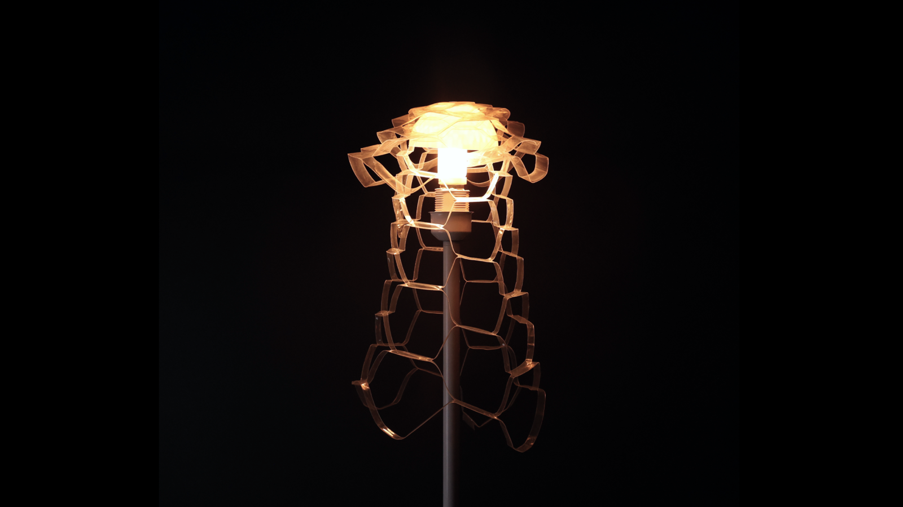
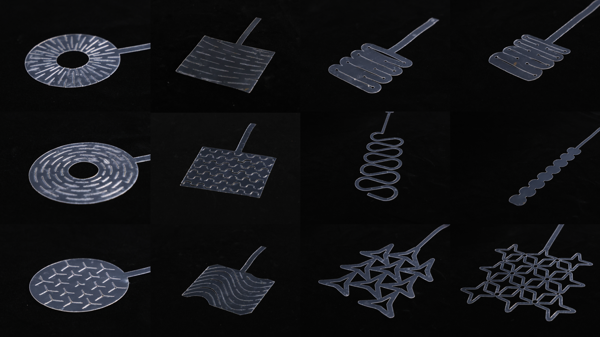
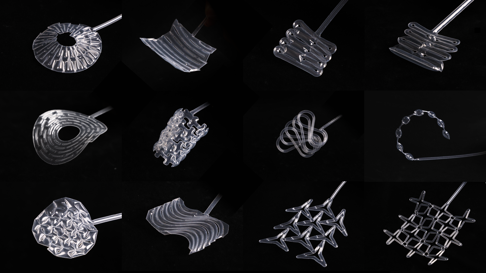
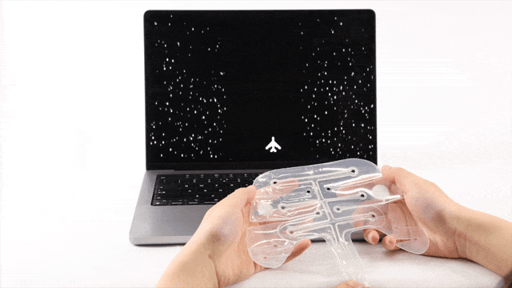
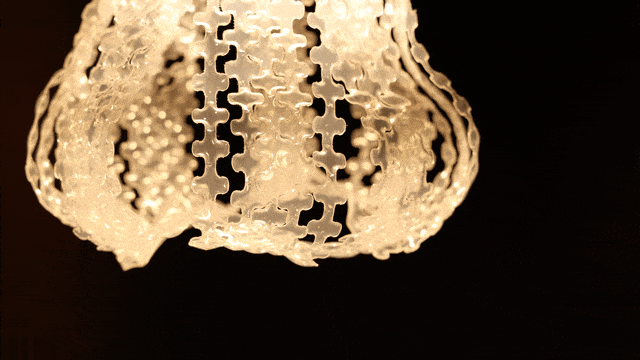
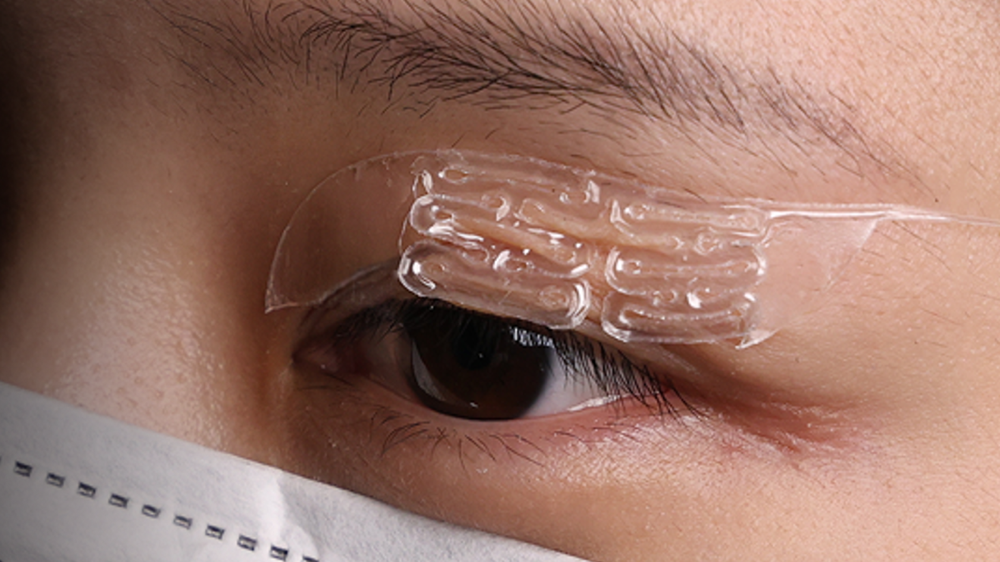

KiriInflate
October 2025
Yue Yang, Chuang Chen, Yulu Chen, Ge Gao, Lei Ren, Bolan Yao, Lingyun Sun, Ye Tao, Guanyun Wang*
We present KiriInflate, a rapid, precise, and accessible fabrication method for creating stretchable inflatables with Kirigami structures. These inflatables, fabricated at multiple scales (from fingernail-sized to body-sized), exhibit rapid, large contraction upon inflation up to 83.5% and provide tunable stretchability. Our fabrication process leverages the electrostatic adhesion of plastic films and an off-the-shelf laser cutter to simultaneously cut and fuse the edges of inflatables, achieving ultra-narrow seals (< 0.125 mm). Our structural design enables versatile 3D morphing upon inflation and tunable stretch behavior, with experimental studies offering design guidelines for key geometric parameters. A series of applications, including an eyelid assistive device, a multi-mode game handle, a dynamic elbow brace, and breathable lamps, highlight its potential for diverse interaction in HCI.
Publication: ACM Symposium on User Interface Software and Technology (UIST) 2025, Full Paper




